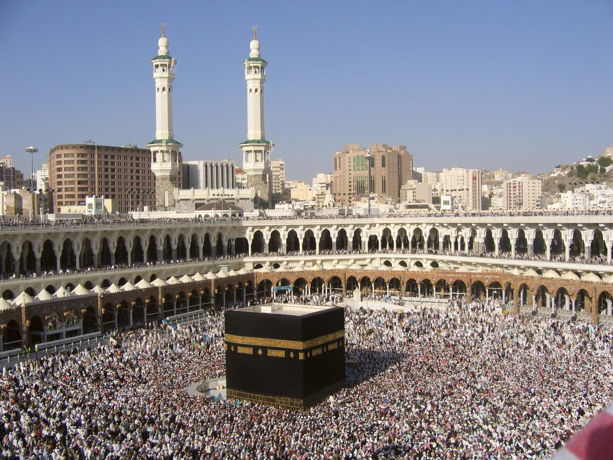

Wishlist! (Travel)
1. MECCA

As a muslim, I really want to go there, together
with my family. That would be my first place
if I have the chance to travel oversea.
2. BUNGEE JUMP IN NEW ZEALAND

Bungee jumping is an extreme sport in
which people jump from higher ground
such as bridge with an elastic rope tied
to their ankles to stop them from hitting
the ground. Rope is designed to stretch,
not break. When the rope has stretched
all the way, the jumper bounces back up.
3. SKY DIVE IN SYDNEY, AUSTRALIA

Skydive Australia is the largest and most
professional skydive company in Australia.
And offers thrill-seeking tourists from
around the world the perfect excuse to
jump out of a plane over five of the most
breathtaking locations around Australia.